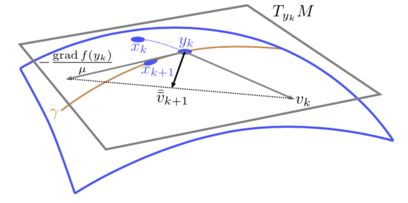
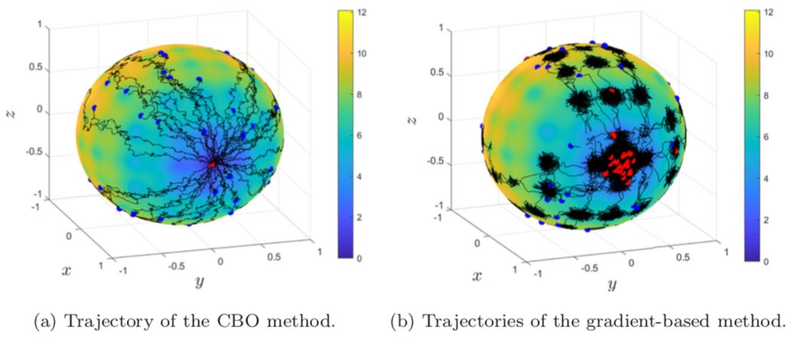
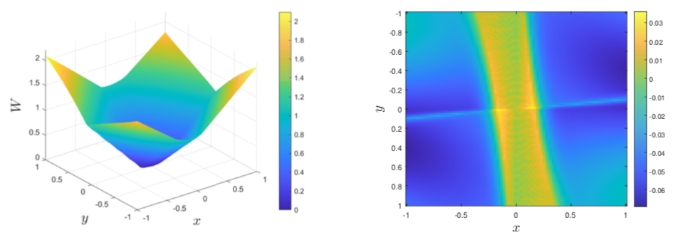

[ICML] Accelerated gradient methods for geodesically convex optimization
The paper “ Accelerated gradient methods for geodesically convex optimization: Tractable algorithms and convergence analysis ” has been accepted to the International Conference on Machine Learning (ICML). Accelerated gradient methods for geodesically convex optimization: Tractable algorithms ...
ICML:AGD
Accelerated gradient methods for geodesically convex optimization: Tractable algorithms and convergence analysis. Jungbin Kim, and Insoon Yang. International Conference on Machine Learning (ICML), PMLR 162, pp. 11255-11282, 2022.

[M3AS] Nonconvex optimization on the Stiefel manifold
The paper “ Stochastic consensus dynamics for nonconvex optimization on the Stiefel manifold: Mean-field limit and convergence ” has been accepted for publication in Mathematical Models and Methods in Applied Sciences (M3AS). Stochastic consensus dynamics for ...

[TAC] Maximum entropy optimal control in continuous time
The paper “ Maximum entropy optimal control of continuous-time dynamical systems ” has been accepted for publication in the IEEE Transactions on Automatic Control . Maximum entropy optimal control of continuous-time dynamical systems. by Jeongho Kim, ...
TAC:CVaR
Risk-sensitive safety analysis using conditional value-at-risk. Margaret P. Chapman , Riccardo Bonalli , Kevin M. Smith, Insoon Yang, Marco Pavone , and Claire J. Tomlin. IEEE Transactions on Automatic Control,accepted.